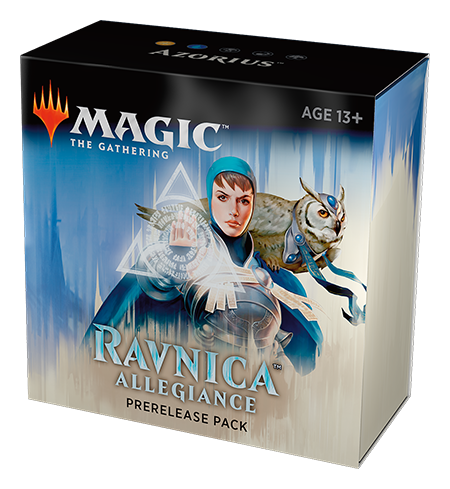
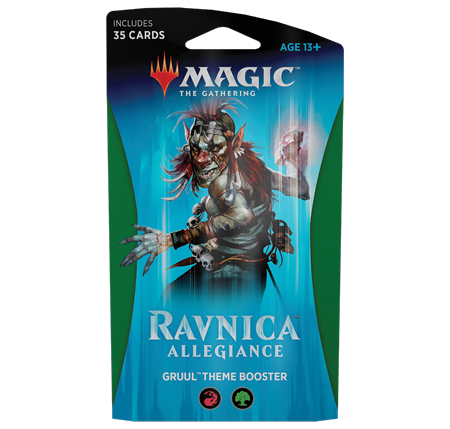
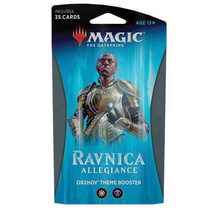
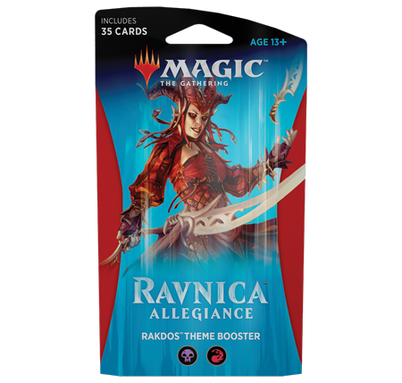
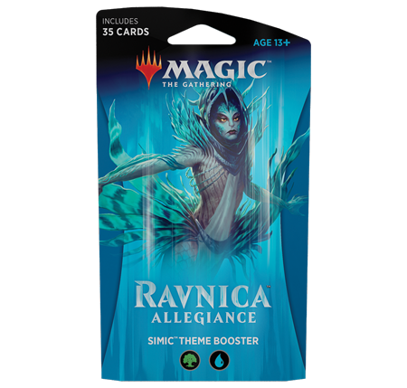

<h1>Magic the Gathering</h1>

<h2>Ravnica Allegiance</h2>

<h3>Prerelease Pack</h3>

<h4>Azorius</h4>

<p></p>

<ol>
<li>Kaya, Orzhov Usurper</li>
<li>Impassioned Orator</li>
<li>Unbreakable Formation</li>
<li>Azorius Locket</li>
<li>Azorius Skyguard</li>
<li>Gateway Sneak</li>
<li>Sky Tether</li>
<li>Senate Courier</li>
<li>Senate Griffin</li>
<li>Justiciar&#39;s Portal</li>
<li>Sage&#39;s Row Savant</li>
<li>Arrester&#39;s Zeal</li>
<li>Slimebind</li>
<li>Sphinx&#39;s Insight</li>
<li>Persistent Petitioners</li>
<li>Impassioned Orator</li>
<li>Azorius Guildgate</li>
</ol>

<h3>Theme Boosters</h3>

<h4>Azorius</h4>

<p></p>

<ol>
<li>Azorius Knight-Arbiter</li>
<li>Concordia Pegasus</li>
<li>Senate Griffin</li>
<li>Azorius Locket</li>
<li>Impassioned Orator</li>
<li>Lawmage&#39;s Binding</li>
<li>Azorius Guildgate</li>
<li>Gateway Sneak</li>
<li>Forbidding Spirit</li>
<li>Summary Judgment</li>
<li>Essence Capture</li>
<li>Arrester&#39;s Admonition</li>
<li>Spirit of the Spires</li>
<li>Arrester&#39;s Zeal</li>
<li>Rally to Battle</li>
<li>Windstorm Drake</li>
<li>Chillbringer</li>
<li>Sentinel&#39;s Mark</li>
<li>Clear the Mind</li>
<li>Quench</li>
<li>Sphinx&#39;s Insight</li>
<li>Dovin&#39;s Acuity</li>
<li>Azorius Knight-Arbiter</li>
<li>Lawmage&#39;s Binding</li>
<li>Bring to Trial</li>
<li>High Alert</li>
<li>Thought Collapse</li>
<li>Azorius Knight-Arbiter</li>
<li>Senate Guildmage</li>
<li>Sphinx of New Prahv</li>
<li>Senate Griffin</li>
<li>Scrabbling Claws</li>
<li>Rakdos Guildgate</li>
<li>Sphinx&#39;s Insight</li>
<li>Deputy of Detention</li>
</ol>

<h4>Gruul</h4>

<p></p>

<ol>
<li>Frenzied Arynx</li>
<li>Gates Ablaze</li>
<li>Gate Colossus</li>
<li>Rampaging Rendhorn</li>
<li>Open the Gates</li>
<li>Gruul Guildgate</li>
<li>Rubblebelt Runner</li>
<li>Wrecking Beast</li>
<li>Axebane Beast</li>
<li>Savage Smash</li>
<li>Gruul Locket</li>
<li>Rubble Reading</li>
<li>Sylvan Brushstrider</li>
<li>Rumbling Ruin</li>
<li>Ghor-Clan Wrecker</li>
<li>Gruul Beastmaster</li>
<li>Stony Strength</li>
<li>Titanic Brawl</li>
<li>Rhythm of the Wild</li>
<li>Burning-Tree Vandal</li>
<li>Tower Defense</li>
<li>Open the Gates</li>
<li>Enraged Ceratok</li>
<li>Deface</li>
<li>Rubblebelt Runner</li>
<li>Frenzied Arynx</li>
<li>Savage Smash</li>
<li>Junktroller</li>
<li>Zhur-Taa Goblin</li>
<li>Clan Guildmage</li>
<li>Sunder Shaman</li>
<li>Rubble Slinger</li>
<li>Bolrac-Clan Crusher</li>
<li>Wrecking Beast</li>
<li>Amplifire</li>
</ol>

<h4>Orzhov</h4>

<p></p>

<ol>
<li>Vizkopa Vampire</li>
<li>Archway Angel</li>
<li>Orzhov Guildgate</li>
<li>Orzhov Locket</li>
<li>Twilight Panther</li>
<li>Syndicate Messenger</li>
<li>Final Payment</li>
<li>Imperious Oligarch</li>
<li>Vindictive Vampire</li>
<li>Thirsting Shade</li>
<li>Resolute Watchdog</li>
<li>Bladebrand</li>
<li>Bankrupt in Blood</li>
<li>Ministrant of Obligation</li>
<li>Plague Wight</li>
<li>Debtors&#39; Transport</li>
<li>Tenth District Veteran</li>
<li>Syndicate Messenger</li>
<li>Ill-Gotten Inheritance</li>
<li>Bring to Trial</li>
<li>Knight of Sorrows</li>
<li>Orzhov Enforcer</li>
<li>Knight of the Last Breath</li>
<li>Final Payment</li>
<li>Consecrate/Consume</li>
<li>Catacomb Crocodile</li>
<li>Vizkopa Vampire</li>
<li>Junktroller</li>
<li>Mortify</li>
<li>Civic Stalwart</li>
<li>Basilica Bell-Haunt</li>
<li>Imperious Oligarch</li>
<li>Pitiless Pontiff</li>
<li>Knight of the Last Breath</li>
<li>Kaya&#39;s Wrath</li>
</ol>

<h4>Rakdos</h4>

<p></p>

<ol>
<li>Spikewheel Acrobat</li>
<li>Noxious Groodion</li>
<li>Rafter Demon</li>
<li>Rakdos Locket</li>
<li>Blade Juggler</li>
<li>Skewer the Critics</li>
<li>Get the Point</li>
<li>Rakdos Trumpeter</li>
<li>Plague Wight</li>
<li>Act of Treason</li>
<li>Smelt-Ward Ignus</li>
<li>Spire Mangler</li>
<li>Dead Revels</li>
<li>Spear Spewer</li>
<li>Deface</li>
<li>Bankrupt in Blood</li>
<li>Light Up the Stage</li>
<li>Noxious Groodion</li>
<li>Goblin Gathering</li>
<li>Goblin Gathering</li>
<li>Goblin Gathering</li>
<li>Hackrobat</li>
<li>Rakdos Firewheeler</li>
<li>Get the Point</li>
<li>Carnage/Carnival</li>
<li>Spikewheel Acrobat</li>
<li>Rakdos Roustabout</li>
<li>Cult Guildmage</li>
<li>Macabre Mockery</li>
<li>Get the Point</li>
<li>Footlight Fiend</li>
<li>Junktroller</li>
<li>Fireblade Artist</li>
<li>Rafter Demon</li>
<li>Captive Audience</li>
</ol>

<h4>Simic</h4>

<p></p>

<ol>
<li>Skitter Eel</li>
<li>Scuttlegator</li>
<li>Persistent Petitioners</li>
<li>Growth Spiral</li>
<li>Root Snare</li>
<li>Open the Gates</li>
<li>Simic Guildgate</li>
<li>Skitter Eel</li>
<li>Applied Biomancy</li>
<li>Steeple Creeper</li>
<li>Simic Locket</li>
<li>Chillbringer</li>
<li>Slimebind</li>
<li>Saruli Caretaker</li>
<li>Pteramander</li>
<li>Prying Eyes</li>
<li>Mammoth Spider</li>
<li>Humongulus</li>
<li>Enraged Ceratok</li>
<li>Faerie Duelist</li>
<li>Gift of Strength</li>
<li>Skitter Eel</li>
<li>Sauroform Hybrid</li>
<li>Trollbred Guardian</li>
<li>Territorial Boar</li>
<li>Growth Spiral</li>
<li>Incongruity/Incubation</li>
<li>Silhana Wayfinder</li>
<li>Applied Biomancy</li>
<li>Frilled Mystic</li>
<li>Gateway Sneak</li>
<li>Combine Guildmage</li>
<li>Combine Guildmage</li>
<li>Sharktocrab</li>
<li>Guardian Project</li>
</ol>
